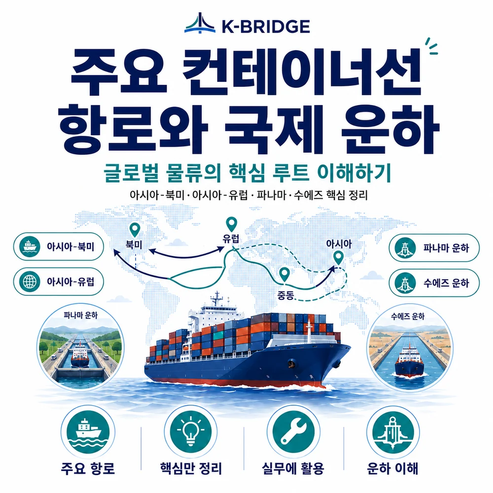
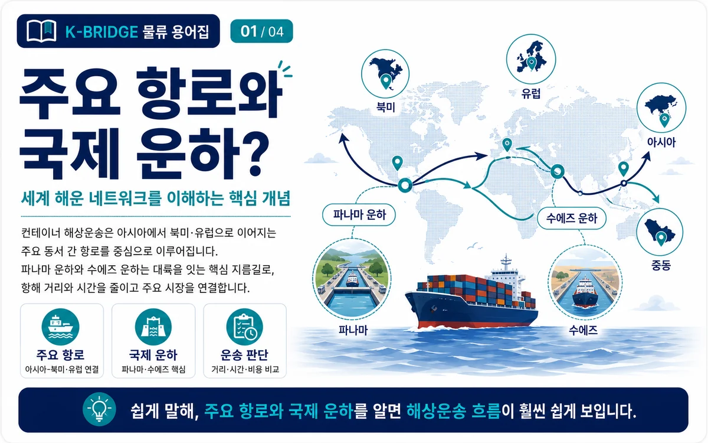
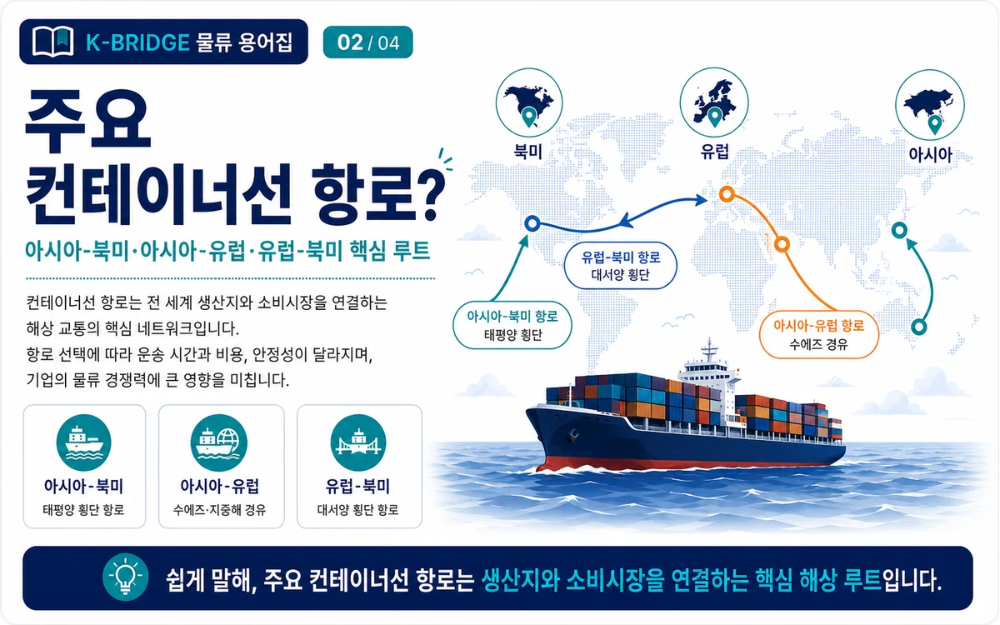
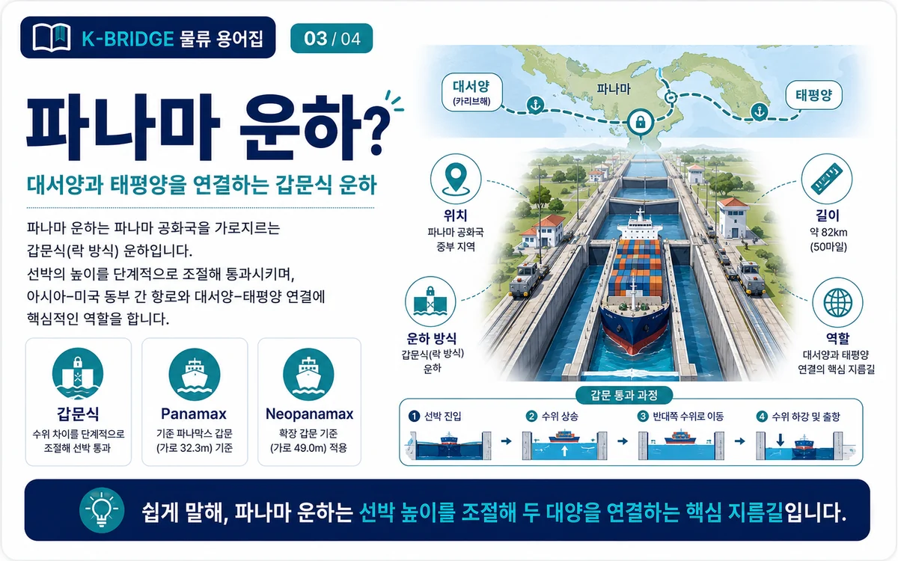
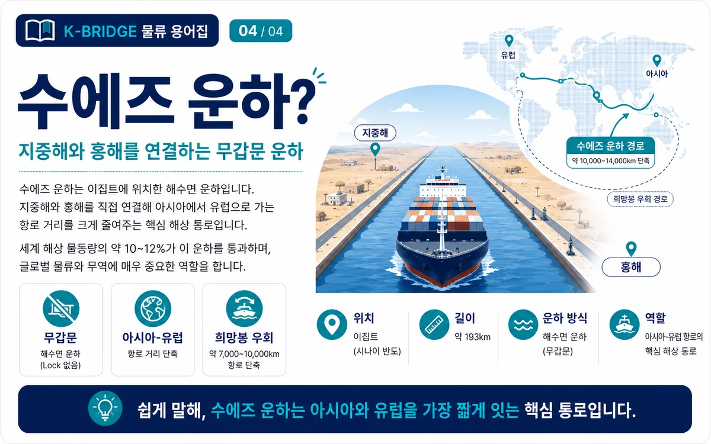

핵심 요약
아시아-북미, 아시아-유럽, 유럽-북미가 대표적인 컨테이너 간선항로입니다. 파나마 운하는 갑문식으로 태평양과 대서양을 연결하고, 수에즈 운하는 무갑문 해수면 운하로 지중해와 홍해를 연결합니다. 실제 운송에서는 직항·환적, 운하 통항 여부, 항만 혼잡과 우회 가능성을 함께 확인해야 합니다.

컨테이너선 항로란?
직접 답변: 컨테이너선 항로는 선박이 정해진 항만과 기항 순서를 반복 운항하는 해상운송 네트워크입니다.
정기선은 항로마다 기항항, 출항 요일, 운항 주기와 예상 운송시간을 설정합니다. 출발항과 도착항 사이에 직항 서비스가 없으면 싱가포르, 상하이, 부산, 로테르담 등 허브항에서 다른 선박으로 환적할 수 있습니다.
기항지 Port of Call
선박이 화물을 싣고 내리기 위해 정기적으로 들르는 항만입니다.
환적 Transshipment
허브항에서 화물을 다른 선박으로 옮겨 최종 목적지까지 연결하는 방식입니다.
Transit Time
출항부터 도착까지 예상되는 해상 운송시간입니다. 기항과 환적에 따라 달라집니다.
Port Rotation
선박이 항만을 방문하는 순서로, 실제 리드타임과 일정 안정성에 영향을 줍니다.

세계 주요 컨테이너선 항로
| 항로 | 주요 연결 지역 | 대표 특징 | 주요 변수 |
|---|---|---|---|
| 아시아-북미 | 한국·중국·일본·동남아 ↔ 미국·캐나다 | 태평양을 횡단하는 대표 간선항로 | 미 서안·동안 선택, 파나마 경유, 항만 혼잡 |
| 아시아-유럽 | 동아시아·동남아 ↔ 북유럽·지중해 | 수에즈 운하 경유가 일반적인 최단 경로 | 홍해 정세, 수에즈 통항, 희망봉 우회 |
| 유럽-북미 | 북유럽·지중해 ↔ 미국·캐나다 동안 | 대서양 횡단 정기선 네트워크 | 계절성, 기항 순서, 항만 파업·혼잡 |
| 지역항로 | 동북아·동남아·중동·오세아니아 | 피더선으로 주요 허브항과 연결 | 환적 대기, 연결선 지연, 항만 운영시간 |
북극항로: 아시아와 유럽 사이의 거리를 줄일 가능성이 있지만 계절, 빙해, 쇄빙선, 보험, 연안국 규제 등 제약이 커 정기 컨테이너 운송의 일반 항로로 보기에는 아직 제한적입니다.

파나마 운하 - 태평양과 대서양을 잇는 갑문식 운하
파나마 운하는 대서양과 태평양 사이 약 80km를 연결합니다. 선박은 갑문을 통해 해수면에서 가툰호 수위까지 올라간 뒤 반대편에서 다시 내려갑니다. 파나마운하청은 운하가 전 세계 다수 항로와 항만을 연결하는 핵심 통로라고 안내합니다.
Panamax와 Neopanamax
Panamax는 기존 갑문 통과 한계를 기준으로 한 선박 규격이고, Neopanamax는 2016년 개통한 확장 갑문을 이용할 수 있는 더 큰 선박군을 의미합니다. 실제 통항 가능 여부는 선박의 길이, 폭, 흘수와 운하 운영 조건을 함께 확인해야 합니다.
파나마 운하는 강수량과 가툰호 수위의 영향을 받습니다. 예약 슬롯, 허용 흘수, 대기시간은 시기별로 달라질 수 있으므로 선적 전 선사 스케줄을 확인해야 합니다.

수에즈 운하 - 지중해와 홍해를 잇는 무갑문 운하
수에즈 운하는 이집트의 포트사이드에서 수에즈까지 이어지며 지중해와 홍해를 연결합니다. 수에즈운하청에 따르면 운하 길이는 약 193.3km이고 갑문이 없는 해수면 운하입니다.
아시아-유럽 항로가 수에즈 운하를 이용하면 아프리카 남단 희망봉을 돌아가는 것보다 항해 거리를 줄일 수 있습니다. 다만 홍해와 중동 정세, 선사 안전정책, 보험과 전쟁위험 할증에 따라 희망봉 우회가 선택될 수 있습니다.
실무 주의: 예약 시 표시된 항로가 실제 운항 과정에서 변경될 수 있습니다. 견적서의 Route, T/S Port, Suez/Cape 표기와 선사 공지를 함께 확인하세요.
파나마 운하와 수에즈 운하 비교
| 구분 | 파나마 운하 | 수에즈 운하 |
|---|---|---|
| 연결 해역 | 태평양 ↔ 대서양·카리브해 | 지중해 ↔ 홍해 |
| 운하 방식 | 갑문식, 가툰호 수위 이용 | 무갑문 해수면 운하 |
| 공식 길이 | 약 80km | 약 193.3km |
| 주요 항로 | 아시아-미국 동안, 미주 동안-서안 | 아시아-유럽, 중동-유럽 |
| 대체 우회 | 남미 남단·다른 복합운송 경로 | 희망봉 우회 |
| 핵심 변수 | 수위·흘수·예약 슬롯 | 홍해 안전·통항 정책·선사 운항 결정 |
항로 선택 전 실무 체크포인트
- 직항과 환적: 환적 횟수와 연결항을 확인해 지연·오선적 위험을 비교합니다.
- 운하 경유 여부: Panama, Suez, Cape 표기를 견적과 선사 스케줄에서 확인합니다.
- Port Rotation: 같은 출발항·도착항이라도 기항 순서에 따라 리드타임이 달라집니다.
- Cut-off: CY Closing, SI·VGM 마감과 실제 선박 출항일을 구분해 관리합니다.
- 항만 혼잡: 대기시간, 파업, 기상, 터미널 생산성 변수를 반영합니다.
- 운임과 할증료: 운하 통과료, 전쟁위험 할증, 긴급 우회 할증이 추가될 수 있습니다.
자주 묻는 질문
Q. 아시아-유럽 컨테이너선은 모두 수에즈 운하를 통과하나요?
Q. 파나마 운하는 왜 갑문이 필요한가요?
Q. 직항이 항상 환적보다 좋은가요?
Q. 견적서에서 운하 경유 여부는 어디서 확인하나요?
선적 항로와 운하 경유 여부가 헷갈린다면 케이브릿지와 확인하세요
출발항, 도착항, 화물 규격과 희망 일정만 정리해도 직항·환적, 예상 항로, 리드타임과 운임 조건을 함께 검토할 수 있습니다.